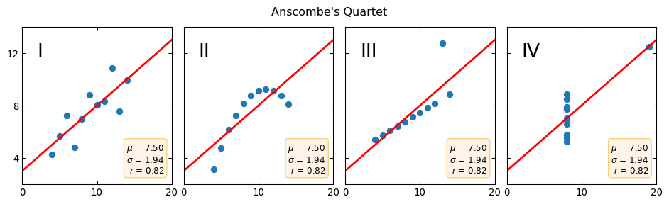

import numpy as np
import pandas as pd
import matplotlib.pyplot as plt
import seaborn as sns9 Introduction to Data Visualization
9.1 Overview
This section provides a background on data visualization and points you toward both further chapters in this book and external visualization resources.
9.1.1 Preliminaries
9.1.1.1 Packages
9.2 What is Data Visualization?
Data visualization is a core component of data analysis, and there are many packages and approaches available when working in Python.
Before diving into specific tools, it’s useful to consider the different philosophies and purposes behind visualizations.
9.2.1 Philosophies of Data Visualization
There are two broad approaches to creating visualizations with code:
- Imperative – You specify step by step what to draw.
- Pros: Maximum flexibility and control.
- Cons: Often verbose; more effort for common plots.
- Pros: Maximum flexibility and control.
- Declarative – You declare what you want, and the library handles the details.
- Pros: Quick and concise for standard chart types.
- Cons: Requires data in the correct format; customization can be limited.
- Pros: Quick and concise for standard chart types.
Choosing between them depends on your goals and your data.
9.2.2 Purposes of Data Visualization
It is also helpful to keep in mind the three broad purposes of visualization:
- Exploratory – To understand your data and discover patterns.
- Scientific – To communicate precise quantitative findings.
- Narrative – To tell a data-driven story and engage an audience.
Python excels in exploratory and scientific visualization. For narrative visualization, the tools are improving but still less streamlined for rapid story creation.
9.2.2.1 Exploratory Visualization
The first type of data visualization is exploratory visualization that you use when you are looking at data to understand it. Simply plotting your data is often the best way to spot patterns, anomalies, or issues before doing any sophisticated analysis.
A classic example that demonstrates the importance of visualization is Anscombe’s Quartet—four datasets that share the same mean, standard deviation, and correlation but have very different underlying distributions.
For this example, let’s construct four different datasets:
# Define the four datasets
x = [10, 8, 13, 9, 11, 14, 6, 4, 12, 7, 5]
y1 = [8.04, 6.95, 7.58, 8.81, 8.33, 9.96, 7.24, 4.26, 10.84, 4.82, 5.68]
y2 = [9.14, 8.14, 8.74, 8.77, 9.26, 8.10, 6.13, 3.10, 9.13, 7.26, 4.74]
y3 = [7.46, 6.77, 12.74, 7.11, 7.81, 8.84, 6.08, 5.39, 8.15, 6.42, 5.73]
x4 = [8, 8, 8, 8, 8, 8, 8, 19, 8, 8, 8]
y4 = [6.58, 5.76, 7.71, 8.84, 8.47, 7.04, 5.25, 12.50, 5.56, 7.91, 6.89]
datasets = {"I": (x, y1), "II": (x, y2), "III": (x, y3), "IV": (x4, y4)}Then, visualize them side by side:
# Create subplots
fig, axs = plt.subplots(
1, 4, sharex=True, sharey=True, figsize=(12, 3),
gridspec_kw={"wspace": 0.08, "hspace": 0.08},
)
axs[0].set(xlim=(0, 20), ylim=(2, 14))
axs[0].set(xticks=(0, 10, 20), yticks=(4, 8, 12))
# Plot each dataset with regression line and summary stats
for ax, (label, (x, y)) in zip(axs.flat, datasets.items()):
ax.text(0.1, 0.9, label, fontsize=20, transform=ax.transAxes, va="top")
ax.tick_params(direction="in", top=True, right=True)
ax.plot(x, y, "o")
# Linear regression
slope, intercept = np.polyfit(x, y, deg=1)
ax.axline(xy1=(0, intercept), slope=slope, color="r", lw=2)
# Statistics box
stats = (
f"$\\mu$ = {np.mean(y):.2f}\n"
f"$\\sigma$ = {np.std(y):.2f}\n"
f"$r$ = {np.corrcoef(x, y)[0][1]:.2f}"
)
bbox = dict(boxstyle="round", fc="blanchedalmond", ec="orange", alpha=0.5)
ax.text(
0.95, 0.07, stats, fontsize=9, bbox=bbox,
transform=ax.transAxes, horizontalalignment="right",
)
plt.suptitle("Anscombe's Quartet")
plt.show()
Tip
Exploratory visualization is often quick, flexible, and informal. It is primarily for your own understanding, or at most for co-authors and collaborators. For such purposes, many automated EDA (Exploratory Data Analysis) tools exist.
9.2.2.2 Scientific Visualization
The second type of data visualization is scientific visualization as the refined version of your exploratory plot(s) that:
- Often contains a high density of information;
- Is designed for technical audiences, such as journal readers or subject-matter experts;
- Must allow accurate reading of key values.
These are the figures you might include in a technical paper the kind of images that truly embody the saying “A picture is worth a thousand words.”.
In short-format journals, such as Physical Review Letters (with its 8-page limit), it is common to see compact, information-rich plots.
These figures are typically less flashy than narrative charts but are critical for conveying “killer results” in your research.
9.2.2.3 Narrative Visualization
The final type is narrative visualization as the the “bold font” of visualization that:
- Communicates insight, not just data;
- Guides the viewer’s attention, often with annotations, highlights, or visual emphasis;
- Targets a broad audience, including non-experts or policymakers.
This style of visualization requires the most thought and careful design, moving from raw data views to a polished, insight-driven story. Examples of this type include the visualizations you might encounter in expert articles in The Financial Times, The Economist, etc.
Narrative visualizations are particularly valuable when:
- You are summarizing research for a wide readership.
- Writing blog posts or public reports.
- Communicating with stakeholders without deep technical expertise.
9.3 Quick Guide to Data Visualization
Addressing data visualization in full is far beyond the scope of this course. However, a few general pointers will serve you very well if you follow them consistently.
- Clarify the Message: A picture may tell a thousand words—but you must decide which words.
- Ask yourself: “What does this plot tell the viewer?”
- Identify the key takeaway and make it immediately apparent.
- Ensure the viewer is left with no ambiguity about your intended message.
- Make Every Plot Count: Articles typically include a limited number of plots (e.g., academic papers with fewer than 10 plots), each of which should advance the narrative of your work:
- Avoid redundancy: If your data are normally distributed, a plot may not add value.
- Highlight contrasts: Two distributions with important differences deserve a visual comparison.
- Choose the Right Plot Type: Selecting the appropriate chart type is critical
- A chart type may deliver a certain type of messages better than other chart types:
- Scatter plot – For independent observations with no autocorrelation.
- Line chart – For *time series** or data with sequential correlation.
- Bar charts – For categorical comparisons; consider stacked vs. grouped based on your story.
- In addition to the data presented in the chosen chart, you can encode extra information for another dimension with:
- Color (e.g., categories or magnitude)
- Shape (for multiple groups)
- Size (for magnitude comparisons)
- A chart type may deliver a certain type of messages better than other chart types:
- Label Clearly: Many otherwise strong plots fail due to missing context:
- Axis labels – Always include them, and if there are units, state them clearly (e.g., “Salary (2015 USD)”).
- Tick labels – Tailor them to the scale (linear vs. logarithmic).
- Titles – Use them if axes and the plot alone do not fully convey the message.
- Axis labels – Always include them, and if there are units, state them clearly (e.g., “Salary (2015 USD)”).
- Guide the Viewer’s Attention: If you have certain features more important, you may highlight them on the chart in such ways of:
- Using text annotations to point out key features.
- Fading less important elements with transparency.
- Keeping the key line, bar, or point in solid color to draw the eye.
- Using text annotations to point out key features.
Key takeaway: > Good visualization communicates insight clearly, makes every plot count, and guides the reader to the story you want to tell.
Recommended Resources
For further guidance and inspiration:
- Fundamentals of Data Visualization – Short, accessible, and highly practical.
- FT Visual Vocabulary – Helps you choose the right chart for the right message.
- Vector Graphics – Always use vector formats for sharp, professional plots.
9.4 Python Data Visualization Libraries
Python has a rich ecosystem of visualization libraries, each with different strengths depending on whether you need static figures, interactivity, or web integration.
The following sections introduce some popular python libraries. For a comprehensive list, see the PyViz Tools Overview.
9.4.1 Core Visualization Libraries
Here are the core libraries you are most likely to use either directly or indirectly (as many other high-level libraries are built on these core libraries):
- Matplotlib is the most important and widely used visualization library in Python.
- Key Features:
- Imperative approach – build plots piece by piece for complete control.
- Highly flexible but can be verbose for complex plots.
- Supports static plots, diagrams, animations, and 3D visualizations (3D should be used sparingly for clarity).
- Imperative approach – build plots piece by piece for complete control.
- When to Use:
- You need fine-grained control over every visual element.
- You are making bespoke or unusual charts.
- You require careful graphical design or incremental plot building.
- You need fine-grained control over every visual element.
- Key Features:
- Plotly is a declarative-oriented library designed for interactive visualizations.
- Key Features:
- Generates interactive charts with tooltips and zooming.
- Ideal for dashboards and web applications.
- Can export static images but shines in browser-based interactivity.
- Generates interactive charts with tooltips and zooming.
- When to Use:
- You are building a data dashboard or web-based visualization.
- You need interactive plots to explore data beyond static figures.
- You are building a data dashboard or web-based visualization.
- Key Features:
- Bokeh is another interactive visualization library for Python.
- Key Features:
- Enables browser-based, interactive plotting.
- Can handle streaming and real-time data.
- Integrates with Jupyter notebooks, dashboards, and web apps.
- Enables browser-based, interactive plotting.
- When to Use:
- You need interactive visualizations with real-time or large data handling.
- You want standalone HTML outputs for sharing results without extra dependencies.
- You need interactive visualizations with real-time or large data handling.
- Key Features:
9.4.2 Other Libraries
Python has many specialized visualization libraries that complement the core ones. These are useful for statistical plotting, interactive dashboards, machine learning visualization, or domain-specific applications.
- Pandas Built-in plotting provides quick, convenient plots:
- Syntax:
df.plot.*(e.g.,df.plot.scatter).
- Internally uses Matplotlib.
- Excellent for fast exploratory data analysis (EDA), but not suitable for polished publication figures.
- Syntax:
- Seaborn is a high-level statistical visualization library built on Matplotlib:
- Works best with tidy data (one row per observation, one column per variable).
- Provides high-level functions for common statistical plots (e.g., box plots, violin plots, heatmaps).
- Ideal for exploratory analysis and quick statistical graphics.
- Works best with tidy data (one row per observation, one column per variable).
- Altair is a declarative, web-oriented library:
- Produces beautiful, minimalist charts with minimal code.
- Best for interactive, browser-friendly visualizations.
- Built on Vega-Lite, widely used in newsroom data visualization.
- Produces beautiful, minimalist charts with minimal code.
Beyond the core and high-level libraries, Python offers many specialized tools for niche visualization needs:
- proplot: Lightweight Matplotlib wrapper for publication-quality plots.
- seaborn-image: Brings Seaborn-like workflows to image data.
- Lit: Visualization and interpretability for NLP models.
- Wordcloud: Generates word clouds (use sparingly!).
- VisPy: GPU-accelerated visualization for very large datasets.
- HoloViews: Simplifies data-to-visualization workflows; builds on Bokeh and Matplotlib.
- chartify: Quick, high-level plotting library from Spotify.
- palettable: Additional color palettes for Matplotlib and Seaborn.
- colorcet: Perceptually uniform color maps for accurate data perception.
- missingno: Visualizes patterns of missing data in your dataset.